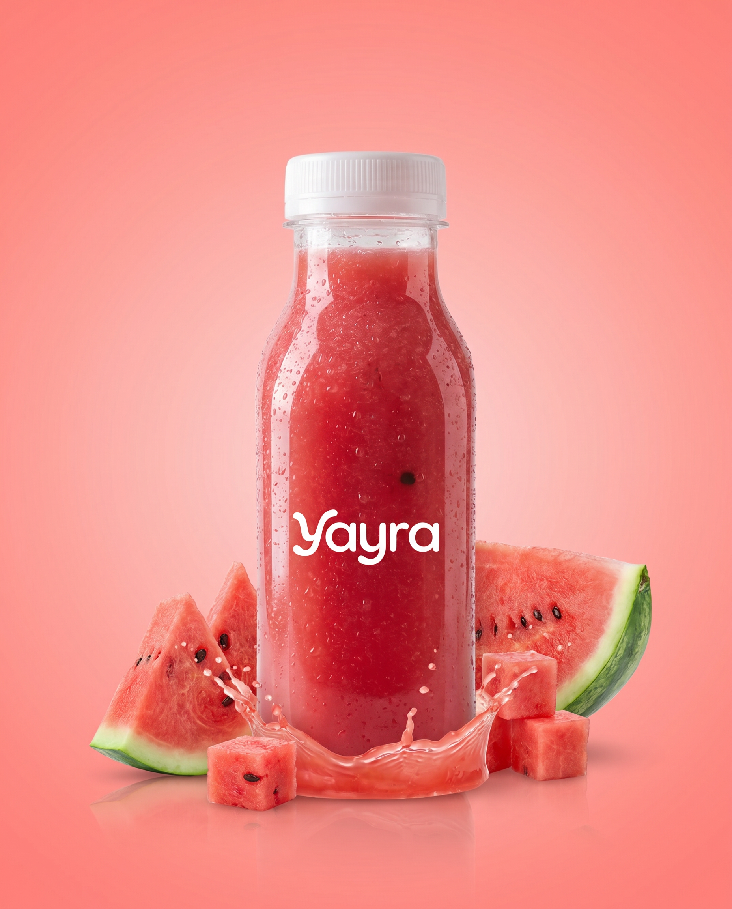
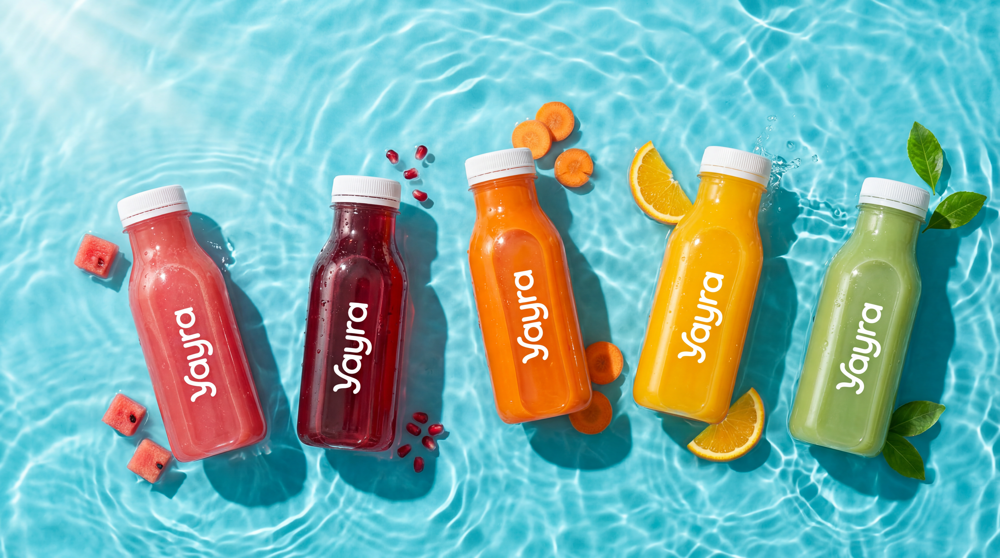
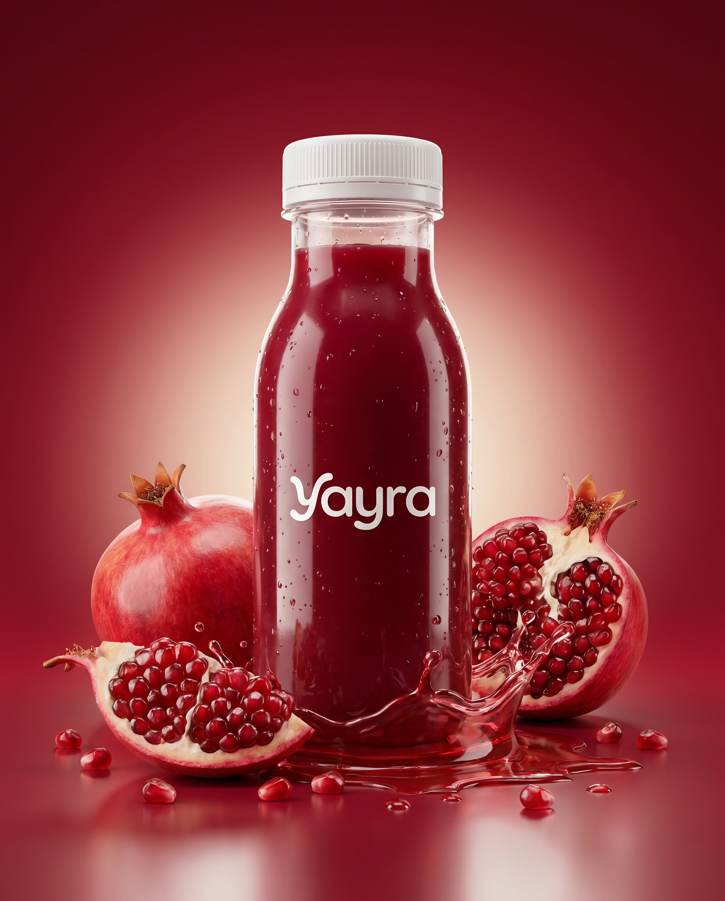
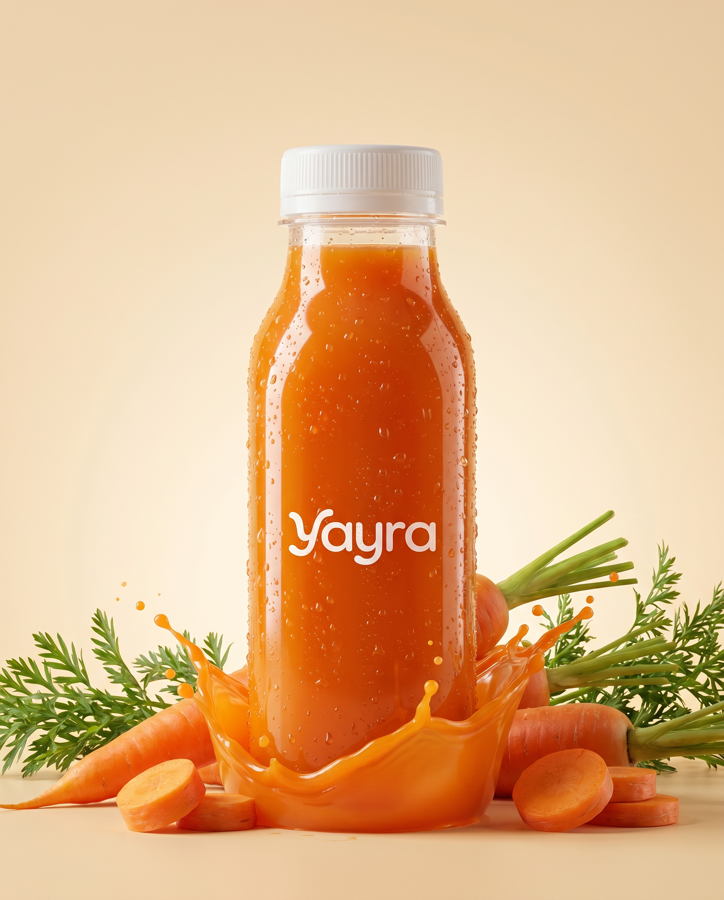
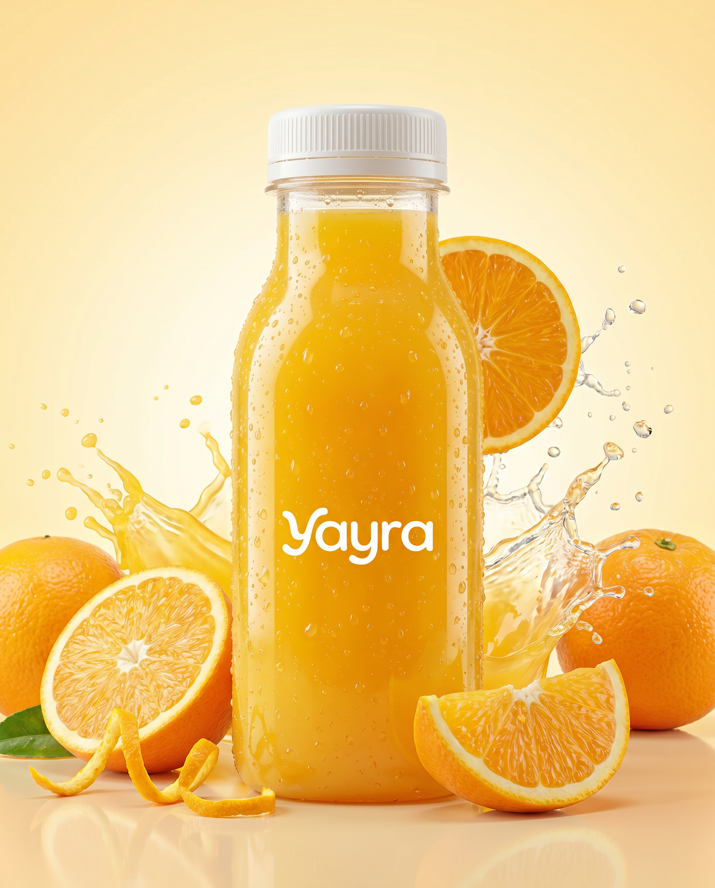
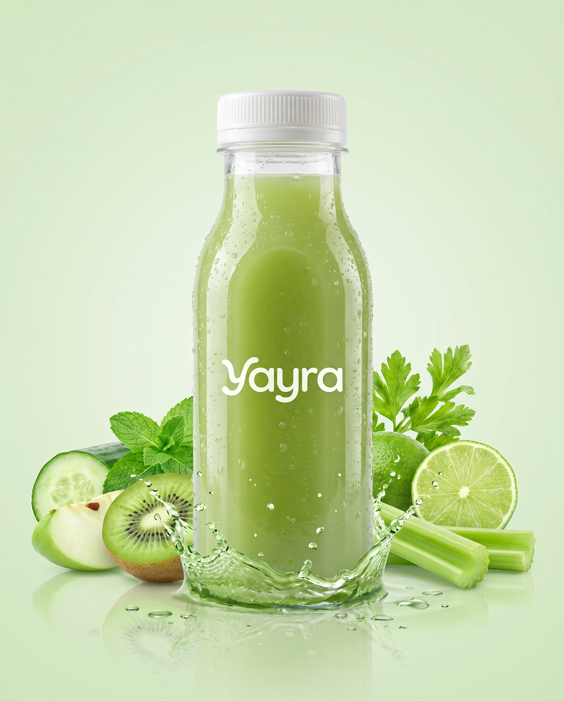

Yozgi salqinlik
Tarvuz
Yozning bir qultumi. Suvga to'la, yengil va muzdek tetiklantiruvchi — issiq kunlarning najoti.
19 000 so'm

↓Zararli, shakarga botgan ichimliklarga endi yo'q deng. Yayra — bu arzon dofamin emas, bu meva va sabzavotlarning haqiqiy quvvati. Shirin, lekin ishonchli.
Har bir shisha — alohida bir lahza. Eng yoqqanini tanlang yoki barchasini sinab ko'ring.

Yozning bir qultumi. Suvga to'la, yengil va muzdek tetiklantiruvchi — issiq kunlarning najoti.

Quyuq, jasur va to'q. Antioksidantlarga boy anor yuragingiz va terangiz uchun jonli bir ehson.

Beta-karotinga boy, mayin va to'yimli. Ichdan nur taratuvchi tabiiy go'zallik eliksiri.

Quyoshni bir qultumda. C vitaminiga to'la, ertangi quvvat va kayfiyatingizning kaliti.

Bodring, kivi, yalpiz va limetta. Tanani yengillashtiruvchi, ichingizdan tiniqlik beruvchi yashil reset.
Yagona shirinlik manbai — mevaning o'zi. Na oq shakar, na sun'iy shirinlatgich qo'shilgan. Ta'mi tabiiy, qoningizdagi shakar esa tinch.
Kofeinli tushkunlik emas — mevalarning tabiiy quvvati. Kun bo'yi barqaror tetiklik beradi.
Anor, tarvuz va sabzi — hujayralaringizni himoya qiluvchi tabiiy qalqon.
Toza tarkib, yashirin qo'shimchalarsiz. Yorliqdagi har bir so'zni o'qiy olasiz va tushunasiz.
Bozordagi ko'p ichimliklar bir lahzalik lazzat berib, ortidan charchoq va shakar tushkunligini qoldiradi. Biz boshqa yo'lni tanladik. Yayra — sizni aldamaydi: har bir qultum mevaning o'zidan, tabiatning ritmida. Shirinlikni yaxshi ko'rasizmi? Biz ham. Faqat to'g'ri yo'l bilan.
Ertalabki quyoshda, mashg'ulotdan keyin yoki shunchaki o'zingiz uchun — Yayra har lahzaga yarashadi.
Minglab mijozlar shakarli ichimliklarni Yayraga almashtirdi. Mana ularning ba'zilari.
"Har kuni ertalab Apelsin ichaman — kofega bo'lgan ehtiyojim yo'qoldi. Ta'mi haqiqiy, sun'iy emas."
"Detox aqlga sig'maydigan darajada toza. Mashg'ulotdan keyin o'zimni yengil his qilaman, og'irlik yo'q."
"Bolalarimga shakarsiz nimadir topish qiyin edi. Tarvuz ularning sevimlisiga aylandi — men esa xotirjamman."
"Anorning to'qligi va ta'mi zo'r. Tarkibida nima borligini bilaman — bu men uchun eng muhimi."
Ha. Yagona shirinlik manbai — mevaning o'z tabiiy shakari. Biz na oq shakar, na sun'iy shirinlatgich qo'shamiz. Shuning uchun ta'mi shirin, lekin sog'liqqa zarari yo'q.
Yo'q. Yayra faqat meva va sabzavotlardan tayyorlanadi. Hech qanday konservant, sun'iy bo'yoq yoki kimyoviy qo'shimcha ishlatilmaydi.
Tabiiy tarkib tufayli Yayra sovutgichda saqlanadi va ochilgandan so'ng 2-3 kun ichida iste'mol qilinishi tavsiya etiladi. Har bir shishada aniq sana ko'rsatilgan.
Agar yangi bo'lsangiz, Apelsin yoki Tarvuz — yengil va hammaga yoqadigan boshlanish. Tozalanish istasangiz Detox, energiya uchun esa Anor zo'r tanlov.
Ha, Toshkent bo'ylab yetkazib beramiz. Buyurtma uchun pastdagi aloqa raqamiga yoki ijtimoiy tarmoqlarimizga yozing — tez orada onlayn do'kon ham ishga tushadi.